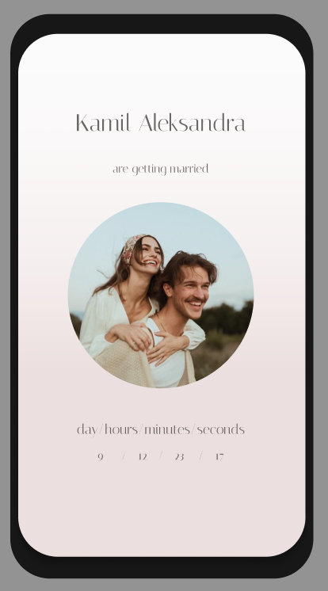
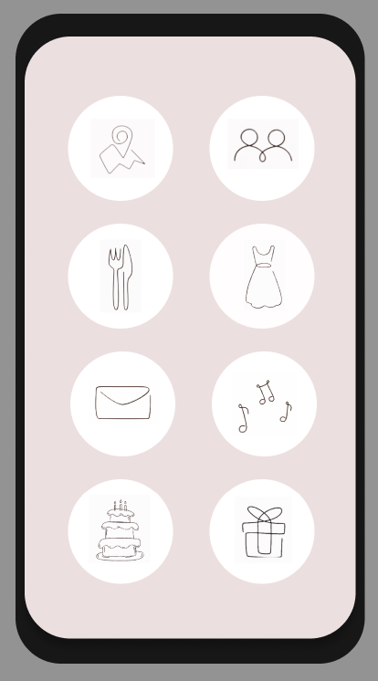

Aplikacja webowa wspierająca pary młode w planowaniu listy gości, budżetu i zadań związanych z organizacją wesela.
„Cheers Wedding App” to projekt aplikacji webowej przygotowanej z myślą o młodych parach, które chcą uporządkować w jednym miejscu najważniejsze elementy związane z organizacją wesela. Celem projektu było stworzenie narzędzia ułatwiającego planowanie wydatków, zarządzanie listą gości, kontrolę harmonogramu oraz realizację zadań prowadzących do przygotowania całego wydarzenia.
Projekt rozwijałem w technologii ASP.NET Core z wykorzystaniem PostgreSQL jako bazy danych oraz Dockera do przygotowania spójnego środowiska uruchomieniowego. Skupiałem się głównie na zaplanowaniu architektury aplikacji backendowej oraz logicznym podziale modułów odpowiadających za konkretne obszary, takie jak goście, budżet, zadania i przebieg przygotowań.
Obecnie rozwój projektu jest czasowo wstrzymany, ale sam koncept pozostaje aktualny i w przyszłości może zostać rozwinięty o kolejne funkcje wspierające użytkowników w planowaniu całego wydarzenia.
Jedno miejsce do śledzenia postępów, najbliższych zadań oraz najważniejszych informacji związanych z przygotowaniami.
Możliwość planowania kosztów, kontrolowania wydatków oraz analizowania budżetu w podziale na kategorie.
Obsługa zaproszeń, statusów RSVP oraz podstawowych informacji organizacyjnych dotyczących uczestników.
W projekcie została zaplanowana relacyjna baza danych obejmująca najważniejsze obszary związane z organizacją wesela oraz codziennym korzystaniem z aplikacji.

